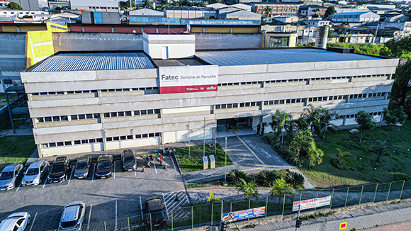
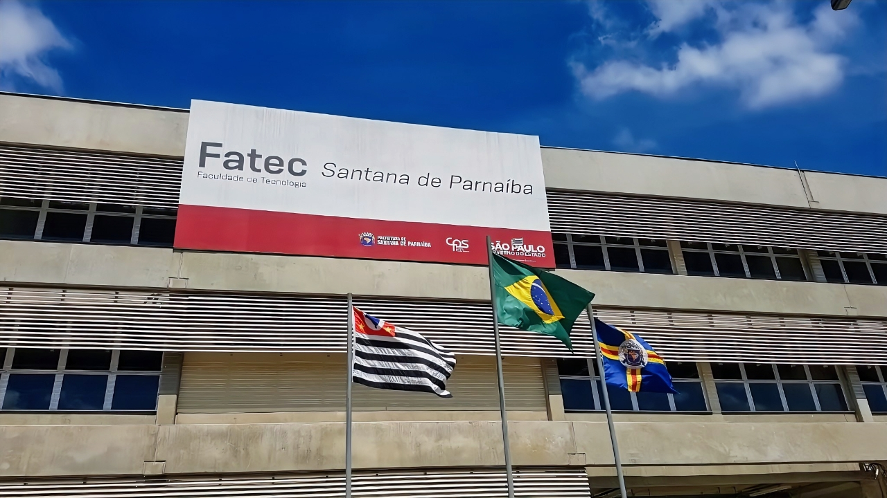
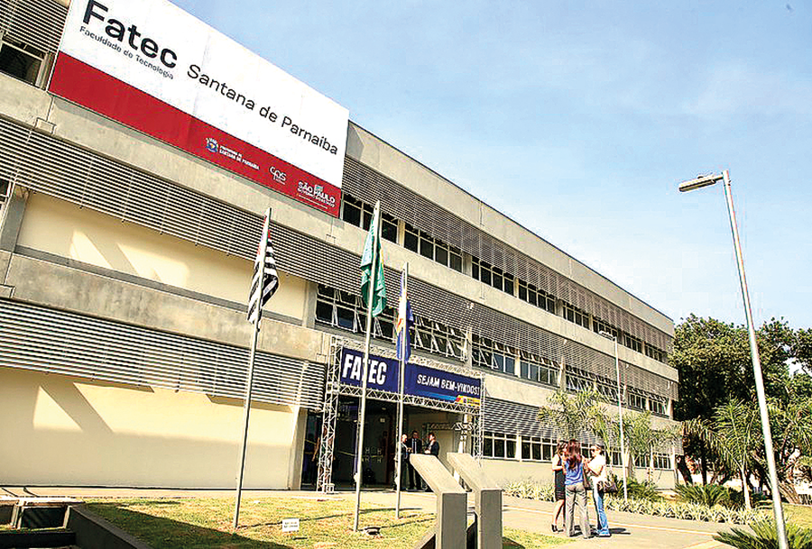
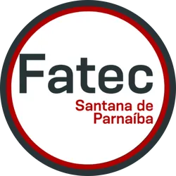
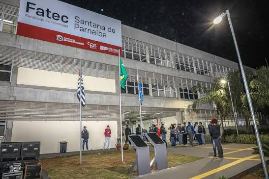

Sobre a Fatec Santana de Parnaíba
A Fatec Santana de Parnaíba é a primeira faculdade pública gratuita do município, inaugurada em 2014 e instalada em sede própria desde 2019 na Fazendinha (Estrada Tenente Marques, 6380). Mantida pelo Centro Paula Souza, a unidade conta com uma estrutura moderna de 3.500 m² equipada com 10 laboratórios tecnológicos focados na Indústria 4.0. Atualmente, oferece quatro cursos de graduação presencial com duração de 3 anos: Análise e Desenvolvimento de Sistemas (matutino), além de Ciência de Dados, Segurança da Informação e Gestão Comercial (noturnos). O ingresso ocorre semestralmente via Vestibular Fatec, com taxa de R$ 90,00, e o atendimento da secretaria é feito pelo telefone (11) 2424-2757.




